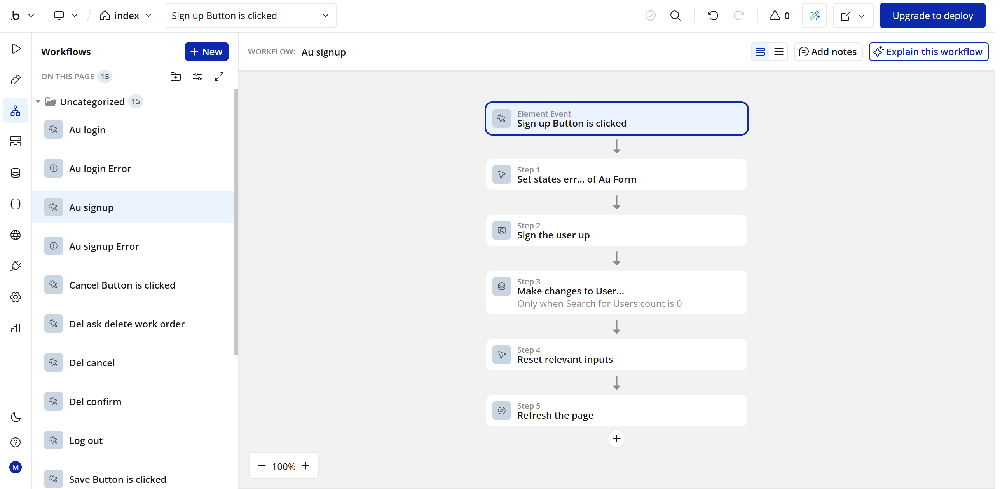
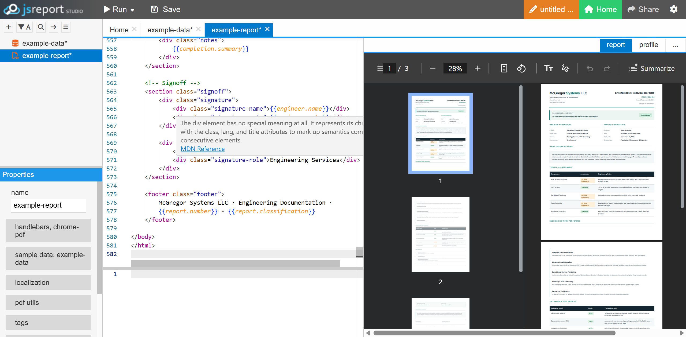

About these images: The screenshots are independently created examples of the development tools and reporting workflows used during this engagement. The original client's application, interface, and business data are proprietary and are not reproduced here.
RAS Systems
Reporting and workflow maintenance
Existing internal tools and reporting workflows involved multiple connected services. Permission rules, reporting logic, and document layouts required corrective work and closer review.
Engineering contributions
- Added administrator-only work-order switching for cross-technician visibility.
- Investigated permissions, application state, and data-binding behavior.
- Worked on multi-page PDF output, including text continuation and layout rules.
- Improved image placement for mixed portrait and landscape content.
- Reviewed and simplified reporting templates and styles.
- Documented system behavior and advised on integration and data-flow risks.
Additional technical context
Access-sensitive features required a distinction between administrator actions and ordinary user behavior. Reporting changes also needed to account for text length and image orientation in generated documents.
This work involved investigating an existing application's behavior before making focused changes. No confidential records, performance claims, or customer endorsements are included here.
The Bubble and JSReport screenshots are independent demonstrations created with example application content and fictional engineering records. They illustrate the relevant development technologies, not the original client's implementation.